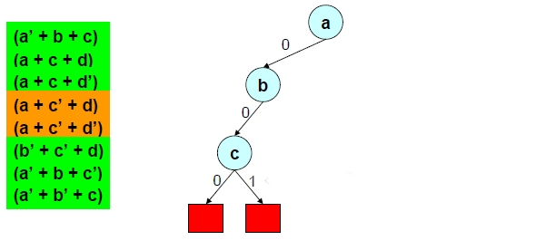
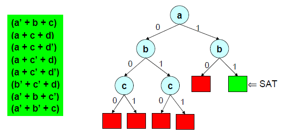
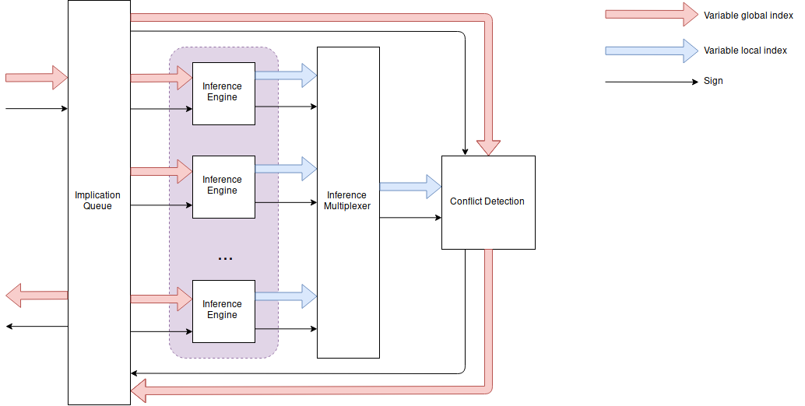
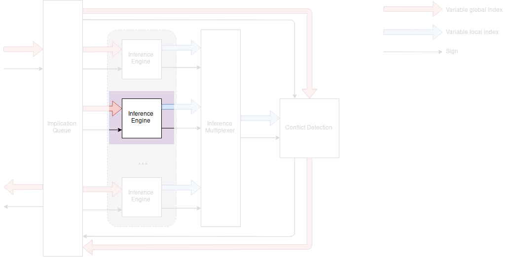
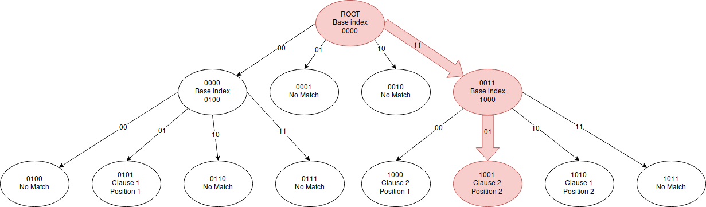

Accelerate Boolean Constraint Propagation for Boolean Satisfiability Solvers with FPGA
Maxence CARON–LASNE
maxence.caron-lasne@lse.epita.fr
Satifiability problems and Boolean Constraint Propagation
Satisfiability problems
Find if a set of values satisfies a given Boolean equation.
Some examples:
Usecases
- SMT solvers
- Symbolic execution
- Formal verification
- Circuit synthesis
- …
Conjunctive Normal Form
- Clauses are composed of literals.
- Literals are variables with a sign.
- Clause size are not fix.
- We tend to normalize the clause's size (3, 4, 16…).
- 3-SAT, 4-SAT, k-SAT.
DPLL algorithm
Davis-Putman-Logemann-Loveland algorithm.
- Backtracking-based.
def DPLL(CLAUSES):
if CLAUSES is a consistant set of literals:
return SAT
if CLAUSES contains an empty clause:
return UNSAT
for every unit clause U in CLAUSES:
CLAUSES = unit-propagate(U, CLAUSES)
for every literal L that occurs pure in CLAUSES:
CLAUSES = pure-literal-assign(L, CLAUSES)
L = choose-literal(CLAUSES)
return DPLL(CLAUSES and L) or DPLL(CLAUSES and not L)
DPLL example

By Tamkin04iut - asdfasf Previously published: asdfasf, CC BY-SA 3.0, https://commons.wikimedia.org/w/index.php?curid=25661587
DPLL example

By Tamkin04iut - asdfasf Previously published: asdfasf, CC BY-SA 3.0, https://commons.wikimedia.org/w/index.php?curid=25661587
Boolean Constraint Propagation
Also called unit-propagation.
In a clause, if all literals but one are assigned and false, the last literal must be assigned to true to satisfies the clause.
Cascade effect
BCP implies a variable value.
- So, no choice to make.
- Free implication.
- Free infered variable.
So we can see "cascades" of propagation.
Example of cascade effect
We cannot imply anything for d and e.
Hardware acceleration?
Is BCP worth accelerating?
- BCP is part of any software SAT solvers.
- BCP is useful to prune branches.
- BCP takes 80%-90% of CPU time because of cascades of implications.
This part of the algorithm is worth accelerating.
What is an FPGA?
Field Programmable Gate Array.
- Array of programmable logic blocks (gate).
- Logic blocks can be wired together.
- User can implements complex logic function and synthetise it on FPGA.
FPGA is by nature highly parallel, so it can be faster for some tasks.
Why FPGA?
- The DPLL algorithm is a branching algorithm.
- The BCP is a simple operation executed many times.
Divide the work between two chips may be worth.
- Branching algorithm: CPU
- Little operation with many workers: FPGA

General BCP Algorithm
General BCP Algorithm
Deducts variable values from input values

Algorithm:
- Fetch list of clauses
- Fetch variable assignments
- Verify if the clause is an unit clause
- Update assignments
Many Inference Engines design
Many Inference Engines design
J. D. Davis, Zhangxi Tan, Fang Yu and Lintao Zhang, "A practical reconfigurable hardware accelerator for boolean satisfiability solvers"

Inference engine

Clause partitionning
Each Inference Engine has only one occurence of a single variable.
At each BCP, a single Inference Engine can only find a single inference.
So the Inference Engine find the inference in a fixed number of clock cycles.
Clause fetching
- Naive solution: just an array.
| Index | Match | Index | Match |
|---|---|---|---|
| 0000 | No Match | 1000 | No Match |
| 0001 | CID: 1; PID: 1 | 1001 | No Match |
| 0010 | No Match | 1010 | No Match |
| 0011 | No Match | 1011 | No Match |
| 0100 | No Match | 1100 | CID: 2; PID: 1 |
| 0101 | No Match | 1101 | CID: 2; PID: 2 |
| 0110 | No Match | 1110 | CID: 1; PID: 2 |
| 0111 | No Match | 1111 | No Match |
Clause fetching
Problem: the array is too sparse.
Clause tree walking

Trie memory representation
The data is less sparse.
| Index | Match | Index | Match |
|---|---|---|---|
| 0000 | Base index: 0100 | 0110 | No Match |
| 0001 | No Match | 0111 | No Match |
| 0010 | No Match | 1000 | CID: 2; PID: 1 |
| 0011 | Base index: 1000 | 1001 | CID: 2; PID: 2 |
| 0100 | No Match | 1010 | CID: 1; PID: 2 |
| 0101 | CID: 1; PID: 1 | 1011 | No Match |
Clause status fetching
- A clause is identified with its CID.
- Putting clause status in an array is OK.
Address CID: [status0][status1][status2]...[status(n-1)] Status: 00: false 01: true 10: unassigned
Inference computation
00 00 00 00 10 00 00 00 ___________ ________ HI(i) i LO(i) is_implication(i) = HI(i) == LO(i) == 0 and lit(i) == unassigned
for i in sizeof(clause_entry):
ret[i] = clause[:i] == 0 and clause[i+1:] == 0 and clause[i] == UNASSIGN
- It is a combinational operation, it is done in one clock cycle.
Results
250 MHz
| SAT Instance | Clause-Variable Ratio | Number of clock cycles |
|---|---|---|
| miters-c3540 | 2.70 | 7 |
| miters-c5315 | 2.96 | 9 |
| miters-c880 | 5.08 | 12 |
| bmc-galileo-8 | 5.08 | 5 |
| bmc-ibm-12 | 4.67 | 6 |
| crypto-md4 | 4.16 | 10 |
| crypto-md5 | 4.17 | 11 |
Supports up to 64,000 variables and clauses.
x5 to x16 speedup relative to contemporary SAT Solvers.
Possible optimisation
The clause fetching may be optimised.
- Content Addressable Memory?
- Cache?
Why cache?
Cache the upcomming variable's clause.
Some clock cycles can be skipped if cache hit.
Is it worth it?
It is if we have a good cache hit/cache miss ratio.
Simulations can be used to determine the efficacity of a cache.
How to test cache efficacity?
Prototype in software can be a solution.
Cache design
Two variables: depth and range.
Cache results on SAT competitions benchmarks
MiniSAT
MiniSAT is a minimalistic SAT solver.
Written is C++.
Well documented and well designed, easy to modify.
Perfect for playing around.
How to use it?
minisat [options] [input-file]
The input file is the SAT problem in CNF format.
CNF files
c Here is a comment. p cnf 5 3 1 -5 4 0 -1 5 3 4 0 -3 -4 0
MiniSAT and cache simulation
Use MiniSAT as simulation engine
The goal is:
- to hook on the
propagatepart of MiniSAT - to output the results at the end of the resolution
Hooks on propagate()
CRef Solver::propagate()
{
// ...
while (qhead < trail.size()) {
Lit p = trail[qhead++]; // 'p' is enqueued fact to propagate.
cache_sim.submit(p.x);
// ...
}
// ...
}
Dataset
SAT competition 2018 benchmarks were used.
Results
Results swing from 0% to 99%.
Very variable between benchmarks.
Cache results for specialized SAT problems
Hypothesis: similar problems share similar structure.
Specialized SAT problems
We will choose symbolic execution as an example of group of similar SAT problems.
Symbolic execution
Symbolic execution: problem of determining what inputs cause the execution of each branch of a program.
Useful for fuzzy testing and reverse engineering.
SAT solving is used to resolve this type of problem.
How to test?
Symbolic execution softwares use SMT solvers as backend.
- SMT solvers uses SAT solvers as backend.
- Let's hook in the backend SAT solver.
Simulation with angr and z3
What is angr?
angr: python library for analyzing binaries.
- Symbolic execution is of its features.
- Uses
z3as backend for solving SMT.
What is z3?
z3 is a theorem prover.
It can solve SMT problems using an intern SAT solver.
Method
Same as MiniSAT, let's hook in the SAT solver.
z3's SAT solver hooks
Very similar to MiniSAT.
Problem
z3 is doing too much dark magic without using SAT solver.
SAT solving use can be forced, but it's hard to configure when used as backend.
Solutions:
- Push harder
- Find another tool
Simulation with KLEE and STP
What is KLEE?
KLEE: symbolic execution tool for generating tests.
KLEE uses STP as backend for SMT solving.
What is STP?
STP is a SMT solver that uses MiniSAT as backend for SAT solving.
It strictly converts SMT problems into SAT problems.
No dark magic.
Method
We hook in MiniSAT.
Results
KLEE does a lot of little SMT resolutions:
~500 variable inferences by problem.
| Range | Cache hits % | Comments |
|---|---|---|
| 0 | ~15% | Lot of 0%, but ~30% otherwise |
| 1 | ~40% | |
| 2 | ~60% | |
| 3 | ~75% |
Conclusion
- Caching clauses is not stable when used with random problems.
- Caching clause fetching may be efficient in some specific cases.
Bibliography
J. D. Davis, Zhangxi Tan, Fang Yu and Lintao Zhang, "A practical reconfigurable hardware accelerator for boolean satisfiability solvers," 2008 45th ACM/IEEE Design Automation Conference, Anaheim, CA, 2008, pp. 780-785.
Davis J.D., Tan Z., Yu F., Zhang L. (2008) Designing an Efficient Hardware Implication Accelerator for SAT Solving. In: Kleine Büning H., Zhao X. (eds) Theory and Applications of Satisfiability Testing – SAT 2008. SAT 2008. Lecture Notes in Computer Science, vol 4996. Springer, Berlin, Heidelberg